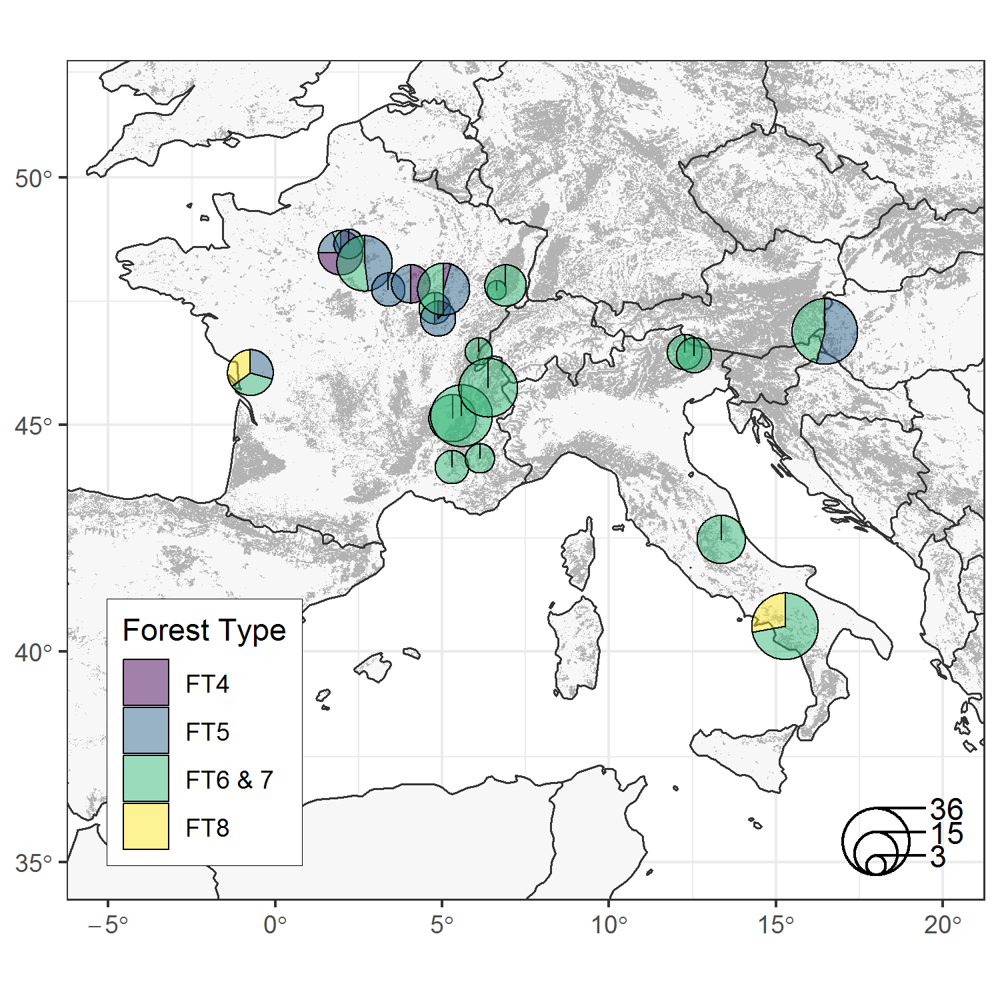
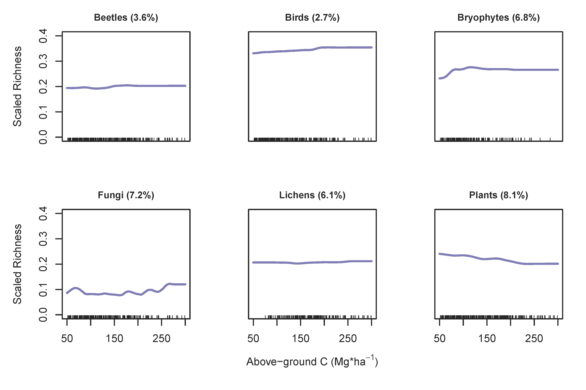
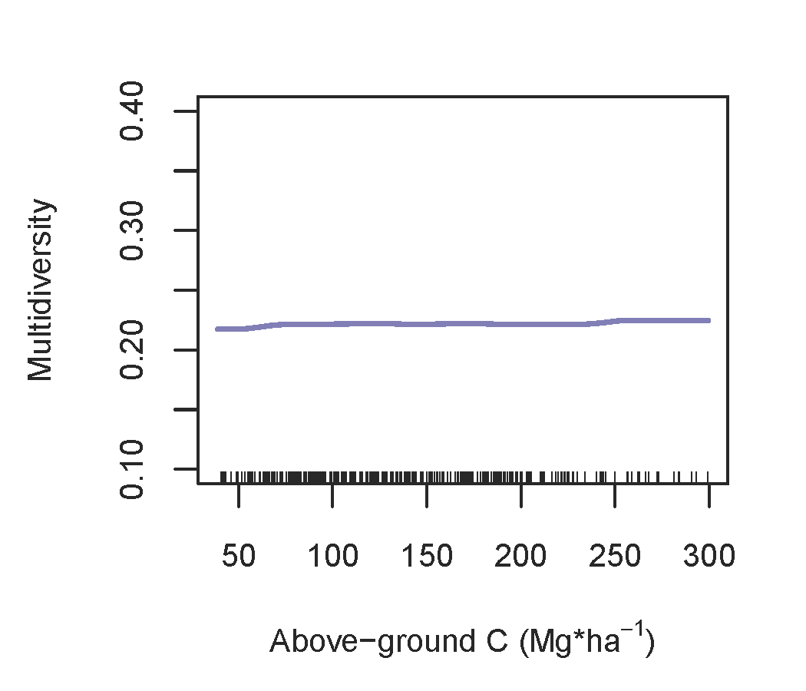
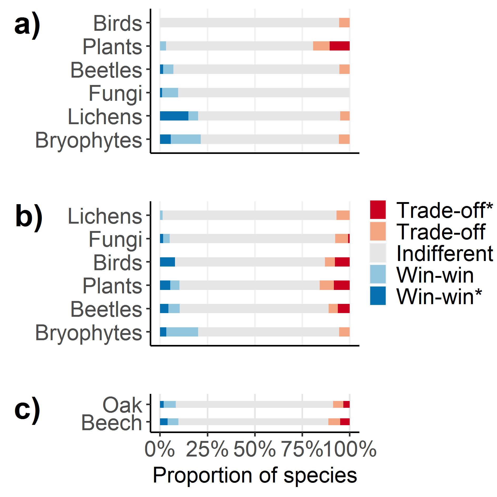
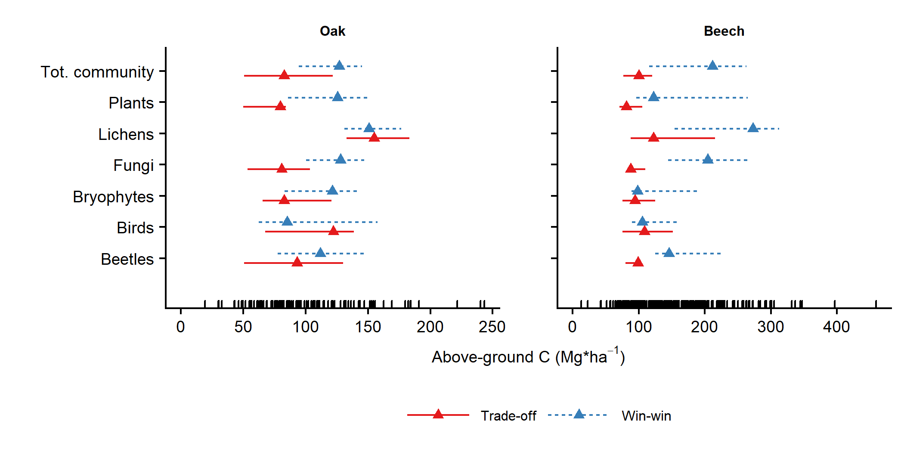

Francesco Maria Sabatini✉ 0000-0002-7202-7697
· fmsabatini
· sPlot-iDiv
Geography Department, Humboldt-Universität zu Berlin. Unter den Linden 6, 10099, Berlin. Germany; German Centre for Integrative Biodiversity Research (iDiv) - Halle-Jena-Leipzig. Germany; Martin-Luther-Universität Halle-Wittenberg, Institut für Biologie, Am Kirchtor 1, 06108, Halle (Saale). Germany
· Funded by Grant No. 658876 - Marie Skłodowska-Curie
Rafael Barreto de Andrade 0000-0002-7976-7647
Sapienza, University of Rome. P.le Aldo Moro 5, 00185 Rome, Italy
Yoan Paillet 0000-0001-7232-7844
Irstea, UR EFNO, Domaine des Barres, 45290 Nogent sur Vernisson, France
Peter Ódor 0000-0003-1729-8897
MTA Centre for Ecological Research, Institute of Ecology and Botany, H-2163 Vácrátót, Alkotmány u. 2-4., Hungary
Christophe Bouget 0000-0002-5206-7560
Irstea, UR EFNO, Domaine des Barres, 45290 Nogent sur Vernisson, France
Thomas Campagnaro 0000-0002-6307-6892
Department of Land, Environment, Agriculture and Forestry, Università degli Studi di Padova, I-35020 Legnaro (PD), Italy
Frédéric Gosselin 0000-0003-3737-106X
Irstea, UR EFNO, Domaine des Barres, 45290 Nogent sur Vernisson, France
Philippe Janssen 0000-0003-3310-0078
Université Grenoble-Alpes, Irstea, UR LESSEM, 2 rue de la Papeterie BP 76, 38402 Saint-Martin-d’Hères, France
Walter Mattioli 0000-0003-2107-1038
Council for Agricultural Research and Economics, Research Centre for Forestry and Wood (CREA-FL), v.le Santa Margherita 80, I-52100 Arezzo (AR), Italy
Juri Nascimbene 0000-0002-9174-654X
University of Bologna, Department of Biological, Geological and Environmental Sciences, via Irnerio 42, 40126 Bologna
Tommaso Sitzia 0000-0001-6221-4256
Department of Land, Environment, Agriculture and Forestry, Università degli Studi di Padova, I-35020 Legnaro (PD), Italy
Tobias Kuemmerle 0000-0002-9775-142X
Geography Department, Humboldt-Universität zu Berlin. Unter den Linden 6, 10099 Berlin, Germany; Integrative Research Institute for Human Environment Transformation (IRI THESys), Humboldt-Universität zu Berlin. Unter den Linden 6, 10099 Berlin, Germany
Sabina Burrascano 0000-0002-6537-3313
Sapienza, University of Rome. P.le Aldo Moro 5, 00185 Rome, Italy
Policies to mitigate climate change and biodiversity loss often assume that protecting carbon-rich forests provides co-benefits in terms of biodiversity, due to the spatial congruence of carbon stocks and biodiversity at biogeographic scales. However, it remains unclear whether this holds at the scales relevant for management, with particularly large knowledge gaps for temperate forests and for taxa other than trees. We built a comprehensive dataset of Central European temperate forest structure and multi-taxonomic diversity (beetles, birds, bryophytes, fungi, lichens, and plants) across 352 plots. We used Boosted Regression Trees to assess the relationship between above-ground live carbon stocks and (a) taxon-specific richness, (b) a unified multidiversity index. We used Threshold Indicator Taxa ANalysis to explore individual species’ responses to changing above-ground carbon stocks and to detect change-points in species composition along the carbon-stock gradient. Our results reveal an overall weak and highly variable relationship between richness and carbon stock at the stand scale, both for individual taxonomic groups and for multidiversity. Similarly, the proportion of win-win and trade-off species (i.e. species favored or disadvantaged by increasing carbon stock, respectively) varied substantially across taxa. Win-win species gradually replaced trade-off species with increasing carbon, without clear thresholds along the above-ground carbon gradient, suggesting that community-level surrogates (e.g. richness) might fail to detect critical changes in biodiversity. Collectively, our analyses highlight that leveraging co-benefits between carbon and biodiversity in temperate forest may require stand-scale management that prioritizes either biodiversity or carbon-in order to maximize co-benefits at broader scales. Importantly, this contrasts with tropical forests, where climate and biodiversity objectives can be integrated at the stand-scale, thus highlighting the need for context-specificity when managing for multiple objectives. Accounting for critical change-points of target taxa can help to deliver this specificity, by defining a safe operating space to manipulate carbon while avoiding biodiversity losses.
Introduction
Forests play a critical role in mitigating climate change,
in addition to providing many ecosystem services fundamental to human society
(FAO, 2015; MEA, 2005).
The estimated amount of carbon stored in forests globally is almost 900 Pg (=1015 g),
with a net global carbon sink of 1.1 Pg C per year
(Pan et al., 2011).
Forests also provide habitat for over half of all known terrestrial plant and animal species (MEA, 2005),
albeit covering only 27% of the Earth’s land area (FAO, 2015).
Conserving forests and managing them sustainably is therefore fundamental
for facing two of the most pressing societal challenges of our times:
biodiversity loss and climate change (MEA, 2005).
Forests play a critical role in mitigating climate change, in addition to providing many ecosystem services fundamental to human society (FAO, 2015; MEA, 2005). The estimated amount of carbon stored in forests globally is almost 900 Pg (=1015 g), with a net global carbon sink of 1.1 Pg C per year (Pan et al., 2011). Forests also provide habitat for over half of all known terrestrial plant and animal species (MEA, 2005), albeit covering only 27% of the Earth’s land area (FAO, 2015). Conserving forests and managing them sustainably is therefore fundamental for facing two of the most pressing societal challenges of our times: biodiversity loss and climate change (MEA, 2005).
Global and regional environmental policies, such as the 2015 Paris Agreement, the REDD+ (Reducing Emissions from Deforestation and forest Degradation) initiative (Gardner et al., 2012) or the European Forest Strategy (European Commission, 2013), all acknowledge the critical importance of forests for jointly addressing biodiversity conservation and climate change mitigation (Bustamante et al., 2016; Deere et al., 2018; Ferreira et al., 2018). The extent to which these two targets can be reached synergistically, however, is not properly understood (Di Marco, Watson, Currie, Possingham, & Venter, 2018; Mori, Lertzman, & Gustafsson, 2017; Pichancourt, Firn, Chadès, & Martin, 2014). If high biodiversity and carbon stocks coincide spatially, then protecting carbon-dense forests or managing forests for high carbon stocks would co-benefit both environmental policy goals (Di Marco et al., 2018; Reside, VanDerWal, & Moran, 2017; Strassburg et al., 2010). Otherwise, this may lead to negative biodiversity outcomes (1; Bustamante et al., 2016; Ferreira et al., 2018). For instance, protecting a carbon-dense forest may reallocate human pressure to unprotected areas with lower carbon density, but high biodiversity (Di Marco et al., 2018). Also, shifting from natural vegetation to tree plantations to maximise carbon stock leads to biodiversity loss (Pichancourt et al., 2014), especially where natural grasslands or savannahs are afforested (2; Burrascano et al., 2016; Pellegrini, Socolar, Elsen, & Giam, 2016). Finally, it remains unclear at which spatial scales co-benefits between conservation and climate-change-mitigation should be sought. More than grain (i.e., spatial resolution), extent (i.e., area covered) is in this context particularly relevant. Should carbon storage and conservation goals be integrated at the extent of individual stands (i.e. individual silvicultural units where management takes place), or at broader scales (e.g., entire landscapes or ecoregions)? Should co-benefits be achieved by managing individual stands to maximize both objectives, or by segregating stands dedicated to biodiversity from those dedicated to carbon storage within a landscape? Understanding the relationship between carbon stocks and biodiversity, and how it varies across spatial scales, is crucial to answer these questions (Gardner et al., 2012; Mori et al., 2017; Reside et al., 2017).
At the extent of an individual forest stand, carbon stock is the amount of long-term carbon stored in living biomass, dead organic matter and soil carbon pools, and is the result of the complex relationships between forest productivity, disturbance history, and species composition (FAO, 2015). Compared to other important forest carbon pools, above-ground live carbon stored in wood (hereafter above-ground live carbon) can be quantified relatively easily, and is therefore considered a sustainable forest management indicator (CBD, 2006; FOREST EUROPE, 2015). Even if living and dead wood constitute the substrate for many forest species (Hatanaka, Wright, Loyn, & Mac Nally, 2011; Lassauce, Paillet, Jactel, & Bouget, 2011; Stokland, Siitonen, & Jonsson, 2012), the carbon contained in these forest features is only indirectly related to biodiversity (Hatanaka et al., 2011). Typically based on coarse-grained data, recent evidence supports a positive correlation between above-ground live carbon and biodiversity at broader extents (Di Marco et al., 2018; Lecina‐Diaz et al., 2018; Strassburg et al., 2010). The shape of the carbon-biodiversity relationship, however, remains unclear for smaller extents such as individual landscapes or stands (Ferreira et al., 2018; Pichancourt et al., 2014). Yet, these extents are the most relevant for decision-makers (Deere et al., 2018).
Large uncertainties also remain on how this relationship varies across biogeographical regions (Di Marco et al., 2018; Lecina‐Diaz et al., 2018; Potter & Woodall, 2014; Xian et al., 2015). For the tropics, there is evidence for a positive relationship between biodiversity and above-ground live carbon stocks, both across stands (Cavanaugh et al., 2014; Deere et al., 2018; Magnago et al., 2015), and within stands (Sullivan et al., 2017), especially for disturbed sites (Ferreira et al., 2018). In temperate forests, research has traditionally focused on carbon sequestration and productivity (Ratcliffe et al., 2017, Huang et al., 2018). Although recent work highlighted the importance of carbon quality, or complexity, for bird biodiversity (Hatanaka et al., 2011; Lecina‐Diaz et al., 2018), studies relating carbon quantity to biodiversity remain rare and mostly refer to tree diversity only (Potter & Woodall, 2014; Xian et al., 2015).
The carbon-biodiversity relationship may also vary across taxonomic groups (Di Marco et al., 2018; Ferreira et al., 2018; Lecina‐Diaz et al., 2018). Even in the tropics most research to date has focused on either vertebrates (3; Deere et al., 2018; Sollmann et al., 2017), or tree species richness only (Cavanaugh et al., 2014; Magnago et al., 2015; Sullivan et al., 2017), while research comparing the fine-scale carbon-biodiversity relationship across groups of organisms remains rare (Ferreira et al., 2018). This is understandable, given the inherent costs of collecting field-based data for multiple taxonomic groups (Bustamante et al., 2016). Focusing on trees or vertebrates, however, assumes that these taxa are good surrogates for overall forest biodiversity (Lecina‐Diaz et al., 2018), while recent evidence suggests that this is not generally true (Larrieu et al., 2018; Sabatini et al., 2016; Zilliox & Gosselin, 2014). Moreover, even within the same taxonomic group, different species may relate very differently to carbon stocks (Edwards et al., 2014; Lindenmayer, Fischer, & Cunningham, 2005; Villard & Jonsson, 2009). Some species may benefit from increasing carbon stocks (hereinafter called ‘win-win species’), while others, hereafter ‘trade-off species’, may be hindered by the environmental conditions associated to carbon-dense forests (Ferreira et al., 2018). Splitting the community into win-win and trade-off species, and considering explicitly the behaviour of species of conservation concern, could thus help to better predict the effect of changing carbon stock on specific components of biodiversity (Magnago et al., 2015; Sollmann et al., 2017).
Finally, although the carbon-biodiversity relationship is often assumed to be linear (3; Deere et al., 2018; Sullivan et al., 2017), thresholds could exist along the carbon stock gradient, meaning that a slight change in forest carbon stocks could cause disproportionate biodiversity loss (Evans et al., 2017; Sasaki, Furukawa, Iwasaki, Seto, & Mori, 2015). Such thresholds have been identified for a range of anthropogenic gradients (Li, Xu, Zheng, Taube, & Bai, 2017; Magnago et al., 2015; Sasaki et al., 2015), including carbon stocks in tropical forests (Ferreira et al., 2018). For temperate forests, however, empirical evidence is lacking (Evans et al., 2017), especially at stand-scale (Sasaki et al., 2015). Identifying such thresholds, and understanding how they vary across taxa and forest types, would provide important information on how forest management, including timber harvesting, might impact biodiversity. This would help to identify ‘safe operating spaces’ for manipulating forest carbon in managed forests without triggering undesired biodiversity loss (Villard & Jonsson, 2009).
Here, we investigated the relationships between the diversity of six ecological groups (i.e., saproxylic beetles, birds, bryophytes, wood-inhabiting fungi, epiphytic lichens, and vascular plants) and carbon stock across 22 temperate forest sites in three European countries. We addressed the following questions:
1) What is the relationship between above-ground live carbon stocks and (a) species richness of different taxa, and (b) a single, unified multidiversity index?
2) How do responses to increasing above-ground live carbon of individual species, and the proportion of win-win and trade-off species, vary across taxonomic groups and forest types?
3) Are there community level thresholds in species richness or composition along carbon stock gradients?
Materials and methods
Study sites
Our study area included a network of 352 plots in 22 temperate forest sites (ranging from 200 to 400 km2), sampled in six different projects (4), and covering a wide latitudinal and longitudinal range across Europe (Figure 1, Table ??).
Figure 1: Figure 1 – Distribution of forest sites in Europe. Pie charts report the relative proportion of plots in different forest types (FTs) for each site. FTs follow EEA (2006). The size of the pie represents the number of plots in each site. Grey shadings represent the distribution of forest in Europe. FT4 - acidophilous oak and oak-birch forest; FT5 - mesophytic deciduous forest; FT6 - European beech (Fagus sylvatica) and (FT7) montane beech forest; FT8 - thermophilous deciduos forest.
The sites covered deciduous forest types that are common in temperate Europe, including acidophilous oak and oak-birch forests (20 plots), mesophytic deciduous forests (84 plots), European beech (Fagus sylvatica) and montane beech forests (232 plots in total), as well as thermophilous deciduos forests (16 plots). Forest type nomenclature follows EEA (2006). Although our dataset cannot be considered representative of the overall variability of these forest types, it covers a wide range of structural types (one-, two- and multi-layered stands), ages, management histories, and management regimes, including coppice, shelterwood, group selection and unmanaged stands, comprising late-successional phases of the forest succession gradient. Stands in the Hungarian dataset represent a gradient in tree species composition, from oak- to beech-dominated forest, but all sharing similar age (mature, between 70-120 yr), and mesic conditions. The datasets in the Italian and French Alps contrast pairs of managed and unmanaged stands in similar growing conditions, as well as ancient and recent forests (i.e. resulting from afforestation of previous pastures and meadows). Forest stands in the Cilento National Park were selected as a representative subset of the most common forest types in the park area, while those in the Gran Sasso National Parks spanned across a range of structural types but all belonged to beech-dominated forest types prioritised for conservation. We report summary statistics of the main structural characteristics for each forest site in Table S2 and show the distribution of silvicultural systems across sites in Figure S1.
Elevation ranged from 150 to 1700 m a.s.l. and substrates included sedimentary rocks (limestones, dolomites, marls, and flysch) in the French and Italian sites, and alluvial gravel mixed with sand and loess in the Hungarian site. All sites belonged to the temperate region: annual mean temperature varied from 5°C in the French Alps to 14°C in southern Italy. Annual precipitation varied from about 600 mm to about 1900 mm.
Sampling and measuring biodiversity
Multi-taxonomic data was collected in the six different projects (Burrascano et al., 2018) using comparable, but not identical sampling protocols (Table S3 in the Supplementary Material for details). All vascular plant species were recorded in plots ranging from 314 to 1,256 m2. Bryophytes were sampled on different substrates (standing trees, deadwood, rocks, and ground) while only epiphytic lichens and wood-inhabiting fungi were considered. Birds were sampled using point-counts or area search techniques. Saproxylic beetles were sampled using window-flight interception traps, emerging traps and Winkler extractors. Only presence-absence data was available for birds, bryophytes, fungi and lichens, while abundance data was available for plants (percentage cover) and beetles (number of trapped individuals). Not all six taxonomic groups were sampled in every plot, returning a total of 1,533 (= taxonomic group x plot) combinations. We fixed nomenclature inconsistencies in the species lists based on up-to-date checklists (Table S3). We derived the association of species to forest or open habitat for 802 out of 1102 (72%) of birds, bryophytes, lichens and plants from IUCN (2018) and Schmidt, Kriebitzsch & Ewald (2011).
To control for varying sampling efforts across sites, we calculated for each plot the scaled richness of each taxonomic group, i.e. the ratio between the richness observed in the plot (alpha diversity) and the species pool size of that taxonomic group in a given site. Species pool size was estimated as the asymptotic species richness based on sample-based rarefaction and extrapolation curves (Colwell et al., 2012) using the Chao2 estimator in the R package iNext (Hsieh, Ma, & Chao, 2016). This approach also returns a measure of sampling completeness, which we compared across sites and taxonomic groups. We then calculated the average scaled richness across taxonomic groups to obtain a single measure of the diversity of all taxa we sampled, hereafter referred to as multidiversity (5). Multidiversity ranges between 0 and 1, with multidiversity of 1 meaning that a plot hosts all species contained in the species pool of a site. Multidiversity has the advantage of being comparable across sites, whatever the sampling effort and the species pool (both at the taxa and the site levels). To assess the robustness of our results to this scaling procedure, we also ran the analyses after scaling the species richness of a taxonomic group in a plot by the total number of species observed (rather than estimated via extrapolation curves) in the corresponding site for that taxonomic group. Neither of the two approaches are perfect, but provide complementary information. While the first approach allows controlling for the varying number of sampling units across sites, the second controls for differences in sampling design not related to sampling size (e.g. plot area).
Forest above-ground live carbon
Sampling of forest structure is described in detail in Burrascano, Sabatini & Blasi, (2011), Janssen et al., (2017), Márialigeti et al., (2016), Paillet et al., (2015), Sabatini et al., (2016), and Sitzia et al., (2012), and synthesized in Table S3. In short, we sampled living trees in plots ranging from 491 and 2,827 m2 in area using a diameter at breast height (DBH) threshold of 10 cm. Height was measured for all the trees or in a sample of them and calculated successively for the others by means of height-diameter log-log models:
log(h) = b0 + b1 · log(DBH)
where h is the tree height, and b0 and b1 are coefficients obtained empirically for each species in each forest site. We calculated growing stock (GS, m3/ha) as the sum of the individual volumes of the trees measured in a plot, scaled to a per hectare basis. Tree volumes were estimated using regionally calibrated species-specific allometric equations, with DBH and height as explanatory variables. Specifically, we referred to Tabacchi et al. (2011), and Castellani et al. (1984) for the Italian datasets, Sopp & Kolozs (2000) for Hungary, and Algan (1894) for France (Table S3). Growing stock was then converted to above-ground live carbon (AGC, MgC/ha) as AGC = GSBEFWBD/2, where BEFs are biomass expansion factors and WBDs (g/m3) are the wood basic densities (see Table 2 in Federici, Vitullo, Tulipano, De Lauretis, & Seufert, 2008).
Control variables
Coarse woody debris was sampled in plots ranging from 491 to 1,600 m2 using a diameter threshold of 10 cm. Volume of deadwood pieces were either calculated using the same allometric equations used for living trees (for standing or downed dead trees), or approximating deadwood volume to truncated cones or cylinders, depending on the data source (Table S3). Since deadwood represents an important resource for many wood-inhabiting fungi and beetles (Lassauce et al., 2011; Stokland et al., 2012), we included the ratio between deadwood volume and total live and dead wood volumes as a control variable. As additional control variables, we derived two topographic covariates (slope, aspect) from a 30-m resolution Digital Terrain Model (NASA, 2006), which we then used to calculate heat load, i.e. the heat gain from incoming solar radiation. Moreover, for each plot, we extracted the value of the 19 bioclimatic variables contained in WorldClim v2.0 (Fick & Hijmans, 2017), based on a 30 arcsec raster resolution (approx. 1 km). To avoid multicollinearity, we ran a Principal Component (PC) analysis, and then considered the first four PCs, which collectively accounted for 93.5% of total variation. After passively projecting the 19 Bioclimatic variables onto the PC space (function envfit, in the R package vegan), we interpreted PC1 as a gradient of temperature, PC2 as gradient of seasonality, PC3, as a gradient of isothermality and PC4 as a gradient of Mediterranean influence (from winter rain to summer rain; Table S4). We derived information on parent material from the European Digital Archive on Soil Maps to classify plots into three classes: igneous-metamorphic, sedimentary-clastic, sedimentary-limestone (Panagos, Jones, Bosco, & Kumar, 2011). Finally, we considered forest type as a categorical variable with four levels: acidophilous oak, mesophytic deciduous, beech dominated, and thermophilous deciduous. As we lacked detailed information on past forest management, we assigned each plot to one of four broad silvicultural systems: shelterwood, coppice with standards, tree/group selection, or unmanaged (at least since 20 years).
Modelling the response of biodiversity to forest above-ground C
We used Boosted Regression Trees (BRTs) to assess the relationship between above-ground live carbon and the scaled species richness of each taxonomic group as well as multidiversity. BRTs are non-parametric models based on decision trees in a boosting framework that does not require prior assumptions. BRTs are therefore relatively robust against overfitting, missing data, and collinearity (Elith, Leathwick, & Hastie, 2008). We used above-ground live carbon as explanatory variable, while controlling for the effect of forest structure, silvicultural system, climate, topography and soil. After checking for collinearity (Pearson’s r>0.7), we retained nine control variables: coarse woody debris ratio, forest type, silvicultural system, bioclimate (four PCs), heat load and substrate parent material. We also included forest site and data source (Table S1), as categorical control variables to account for remaining unobserved environmental and methodological differences across sites.
We parametrized the BRTs setting a tree complexity of 5 and a bag fraction of 0.5 (Elith et al., 2008). We tested different learning rates (0.5 - 0.001), and determined the optimal number of trees for each learning rate using the gbm.step routine provided in the dismo package (Hijmans, Phillips, Leathwick, & Elith, 2011). We then selected the parameter combination returning the highest cross-validated model fit. We finally calculated the relative importance of each explanatory variable (i.e., the fraction of times a variable was selected for splitting a tree in each BRT model, weighted by the squared model improvement). We evaluated model performance using 10-fold cross-validation. We explored the relationship between biodiversity and the explanatory variables using partial dependency plots, which are the graphical visualizations of the marginal effect of a given explanatory variable on scaled richness (or multidiversity). These plots also allow to visually check for non-linear responses and possible thresholds. We explored the interactions between explanatory variables using the gbm.interactions function in the dismo package. Finally, we tested whether the relationship between carbon and biodiversity changes when considering forest and non-forest species separately. All analysis were performed in R 3.4.1.
Assessment of win-win and trade-offs species
We used Threshold Indicator Taxa Analysis – TITAN (6) to identify win-win and trade-off species, i.e. species that respectively increase or decrease their abundance and/or frequency with increasing levels of above-ground live carbon. TITAN uses binary partitioning by indicator value (IndVal, Dufrêne & Legendre, 1997) to identify species-specific change-points along an environmental gradient (above-ground live carbon in our case). Change-points are compared to random data permutations to assess their relevance, taking into account indices of purity (i.e. proportion of bootstrapped change-points response that agree with the observed response) and reliability (i.e. proportion of bootstrapped change points with significant IndVal for p<0.05). We evaluated uncertainty in change-point location based on the bootstrapped empirical distribution (6). To account for the nested (plots within sites) and unbalanced (different number of plots per site) nature of our dataset, we modified TITAN’s original bootstrapping approach to randomly select (with replacement) a number of plots per site equal to the number of plots in the site having the lowest number of plots (if greater than 3, 3 otherwise). We ran TITAN after pooling all species across taxonomic groups, but separately for forest types. We aggregated acidophilous and mesophytic oak forests (oak-dominated thereafter), and lowland and montane beech forests (beech-dominated forest thereafter) but excluded termophilous oak forests due to the low sample size (n = 16). We also checked the conservation status of our win-win or trade-off species using the IUCN red lists (IUCN, 2018) and the r package rredlist (version 4.0, Chamberlain, 2017).
TITAN also allows exploring if species-level change points aggregate to a community-level threshold, i.e. congruent change-points across all individual species, which we did separately for trade-off and win-win species. To explore the variability across taxonomic groups in community-level change-points, we ran TITAN both when considering the whole species assemblage, and for each taxonomic group. We considered narrow confidence limits across bootstrapped replicates as an evidence for a community threshold.
Results
Relationships between above-ground live carbon and species richness
We inventoried a total of 2,384 species: 79 species of birds, 178 lichens, 230 bryophytes, 615 plants, 620 fungi and 693 saproxylic beetles. The average number of species per plot was 94.9 ± 30.8 (standard deviation) species, and ranged between 11.3 ± 4.16 for birds and 34 ± 13.4 for plants. The estimated number of species per site ranged from 34.8 ± 14 for birds to 148 ± 47.7 for plants. Sample-based rarefaction and extrapolation curves showed that our sampling was on average very complete (Figure S2): the median sampling completeness was 92% (Table S5).
The relationship between scaled richness and above-ground live carbon was overall consistently weak (relative importance between 2.7-8.1%, Figures S3-S4), and varied in direction across taxa (Figure 2). The scaled richness of birds, bryophytes and fungi increased slightly, but non-linearly, across the above-ground live carbon gradient (~5% absolute increase along the whole gradient). Most of the increase for birds and bryophytes occurred between 180-200 MgC/ha and 120-150 MgC/ha, respectively. The richness fraction of fungi increased non-monotonically along the above-ground live carbon gradient, with a first peak at 70 MgC/ha, and a secondary peak at 175 MgC/ha. The richness fraction of plants, instead, showed a ~5% absolute decline (see also Figures S5-S10).
Figure 2: Partial dependency plots of the relationship between scaled richness and above-ground live carbon, modelled using Boosted Regression Trees. Scaled richness represents the fraction of species of the species pool size estimated for a given plot. Ticks on the x-axis represent above-ground live carbon data distribution. For each taxonomic group, we report in parenthesis the relative importance of above-ground live carbon in the respective boosted regression tree model.
Above-ground live carbon had a very little relative importance on multidiversity (1.9%), compared to other control variables especially site (relative importance 78.2% - Figure S11). Multidiversity increased by less than 1% over the whole above-ground live carbon gradient (Figure 3). BRT models were effective at modelling multidiversity and scaled richness (cross-validated correlation 0.54-0.84, Table S6), although most of the variation derived from site-to-site differences. Indeed, site was always the variable having the highest relative importance, across all taxonomic groups (49.6-79.4%, Figure S4). Coarse woody debris ratio ranked as second best variable for beetles, bryophytes, fungi and multidiversity (relative importance of 5.9%, 9.4%, 8.5% and 5.3%, respectively). Bioclimate was a good predictor of lichen diversity, especially PC4 – Mediterranean influence (relative importance 10.1%) and PC1 – temperature (8%)(FigureS4). For all taxa but beetles and lichens, the interaction between site and above-ground live carbon ranked among the top three most important interactions.
Figure 3: Partial dependency plot of the relationship between multidiversity and above-ground live carbon using Boosted Regression Trees. Multidiversity represents the average of the scaled richness of different taxonomic groups, when this was scaled on the estimated species pool size of the respective taxonomic group in the forest site. Tick marks on the x-axis represent above-ground live carbon data distribution. The relative importance of above-ground carbon as an explanatory variable for multidiversity is 1.9%.
These results were relatively robust to the scaling criteria used. When scaling richness by the number of species observed in the respective site (rather than estimated), the results were qualitatively similar, although the cross-validated correlation was consistently lower, especially for lichens (Figure S12-S14, Table S7). Also when considering forest and non-forest species separately, the predictive ability of above-ground carbon remained limited, and ranged between 2.4% (birds) and 6.6% (plants) for forest species, and between 3.8% (birds) and 10.9% (plants) for non-forest species (Figure S15, Table S8-S9). Still, we observed a much stronger increase in forest species richness of lichens for increasing carbon, while the response of birds, bryophytes, plants and multidiversity remained qualitatively similar to what observed for the full data (Figure S16-S19).
Response of individual species to changes in above ground carbon
The TITAN analyses identified 27 and 75 species as pure and reliable indicators of above-ground live carbon (i.e. having a consistent response in both direction and magnitude across bootstrap replicates), in oak- and beech-dominated forests, respectively, corresponding to 5.3% and 9.0% of the total number of species (Figure 4). Most of the species-specific change-points occurred between 80-120 MgC/ha, in both forest types (Figure S20-S21). Eleven species (ten plants and one bryophyte) were pure and reliable indicators in both forest types. All pure and reliable trade-off indicator species for oak-dominated forests were plants (Figure S20), either tree species with good dispersal ability (e.g., Sorbus aria, S. domestica, Acer campestre) or herbs and shrubs associated to forest margins (e.g., Vicia sepium, Lonicera xylosteum, Rosa arvensis). Win-win species were mostly bryophytes, typically found in shaded conditions and, secondarily, beetles (Tomicus piniperda, Cryptolestes duplicatus). Trade-off species in beech forests were principally plants (22 species), beetles (16 species) and secondarily birds (three species) and fungi (one species, Figure S21). Win-win species were mostly plants (14 species) and beetles (11 species). Those associated to the right end of the above-ground C gradient were mostly fungi (Fuscoporia ferruginosa, Stereum rugosum and Heterobasidion annosum) and beetles (e.g., Pediacus dermestoides, and Xylechinus pilosus).
Out of the 65 indicator species for which we had information on habitat preference, 37 were forest species (12 win-win and 25 trade-off), and 28 were non-forest species (8 win-win and 20 trade-off; Table S10). Only 200 out of the 2,384 species we considered were included in the IUCN database, with conservation status of win-win and trade-off species only available for 18 species, none of which was threatened.
We found a slightly higher number of trade-off than win-win species, both in oak (3.4 vs. 2%) and in beech (4.7% vs. 4.3%, respectively - Figure 4c). When also considering species not having a reliable response (i.e. responding consistently across bootstraps, but being significant indicators at the p<0.05 level in less than 95% of bootstraps) this balanced picture did not change (8.7% trade-off vs 7.9% win-win species in oak-dominated forests; 11.3% vs 10.8% in beech dominated forests).
The contribution of individual taxonomic groups varied substantially across forest types. In oak-dominated forests (Figure 4a), fungi, lichens and bryophytes returned a higher proportion of win-win than trade-off species, while for plants, we observed the opposite. In beech forests, most taxonomic groups had a higher proportion of trade-off than win-win species, with the exception of bryophytes and beetles (Figure 4b).
Figure 4: Proportion of win-win vs. trade-off species across taxonomic groups and forest types (sorted for decreasing number of win-win species). a) oak-dominated forests. b) beech-dominated forests c) comparison of the two forest types across all taxonomic groups. Win-Win(dark blue, left) and trade-off (dark red, right) species are pure and reliable species. Win-win (light blue, left) and trade-off (orange, right) species are pure but not reliable indicators.
Community level change-points along above-ground live carbon gradients
Aggregating individual species’ responses to infer community-level change-points did not reveal a clear community-threshold in above-ground live carbon across all the taxa (Figure 5). In oak-dominated forests, the wide confidence intervals around the community-level change-points suggest that rather than abruptly, trade-off species were gradually replaced by win-win species with increasing above-ground live carbon. In beech forests, instead, we observed relatively sharp community-level change-points for trade-off species across all taxa (except lichens), which ranged between 81.3 MgC/ha (fungi) and 122.4 MgC/ha (lichens). In both forest types, community-level change-points of win-win species were more variable than those of trade-off species and, at least in beech forests, returned wider confidence intervals (e.g., for plants, fungi and beetles). Community-level change-points for trade-off species of different taxa were very similar across the two forest types, while for win-win species these were on average higher in beech compared to oak forests.
Figure 5: Community-level change-points and 90% quantiles along the above-ground live carbon gradient for different taxonomic groups, in two forest types. Tick marks on the x-axis represent above-ground live carbon data distribution.
Discussion
Can managing forest for carbon storage jointly achieve biodiversity conservation and climate-change mitigation goals? Answering this question critically depends on better understanding the relationship between forest carbon stocks and biodiversity for the scales at which management takes place (Ferreira et al., 2018; Gardner et al., 2012; Mori et al., 2017). We assembled a large dataset of plot-level forest carbon stock and multi-taxonomical diversity for temperate forest, where knowledge gaps are largest. We found little evidence that above-ground live carbon and species richness in temperate forests are congruent at the extent of individual forest stands, which contrasts with most of the evidence from the tropics (Sullivan et al., 2017). For all taxa we investigated, we found that win-win species gradually replaced trade-off species with increasing above-ground live carbon levels, changes that biodiversity surrogates (e.g. richness) would fail to detect. In general, species and community-level change-points were neither congruent, nor equally abrupt across taxa, suggesting that leveraging co-benefits across taxonomic groups might be difficult. Overall, our results highlight that in temperate forests it may not be best to jointly pursue conservation and climate-change-mitigation goals at the extent of forest stands. Rather, forest planners should establish local priorities to leverage potentially higher co-benefits at broader extents. Stand-specific priorities can be established by taking into account the taxon-specific carbon-biodiversity relationship and the share of win-win vs. trade-off species to establish a safe operating space to manipulate above-ground live carbon levels while avoiding undesired biodiversity loss.
Our work provides new insights into the shape, variability and context-specificity of the carbon-biodiversity relationship, especially for taxonomic groups that are rarely considered (e.g., fungi, lichens, saproxylic beetles and bryophytes). The correlation between carbon and biodiversity was overall relatively weak and highly variable across taxonomic groups, and this result was robust when comparing different standardization techniques accounting for data heterogeneity and the unequal sample intensity across sites. While previous research mostly reported that carbon stocks and biodiversity may both benefit from the prioritization of the same set of forest stands a (Deere et al., 2018; Magnago et al., 2015; Reside et al., 2017; Sullivan et al., 2017), for temperate forests the evidence is still inconclusive and mainly based on tree species only (Lecina‐Diaz et al., 2018; Potter & Woodall, 2014; Xian et al., 2015). The contrasting patterns observed across different taxonomic groups, with larger differences than between forest and non-forest species, may explain the weak relationship between multidiversity and above-ground live carbon. On the one hand, carbon-dense, late-successional forests represent better habitat than open forests for many organisms. Birds, for instance, may benefit from high above-ground live carbon, especially in the presence of ecologically complex carbon, such as wide-branching canopies, large standing trees and stem cavities (Paillet et al., 2018; Hatanaka et al., 2011; Lecina‐Diaz et al., 2018). High above-ground live carbon also often correlates with high deadwood levels, which represents fundamental resources for wood-inhabiting fungi or beetles (Lassauce et al., 2011; Stokland et al., 2012). On the other hand, plant species richness decreased with increasing above-ground live carbon stocks, especially when non-forest species were taken into account (Figure S17), likely as a consequence of the strong, asymmetrical competition for light exerted by few tree species on the herb-layer, which comprises the majority of plant species in temperate forests (Sabatini, Jiménez-Alfaro, Burrascano, & Blasi, 2014). Furthermore, in our assessment most variation occurred across forest sites, rather than along the above-ground live carbon gradient. This is in agreement with previous research, which highlighted the importance of broad-scale drivers, including macroclimate and the regional species pool, as determinants of forest fine-scale biodiversity (Jiménez-Alfaro et al., 2018; Sullivan et al., 2017).
Forest assemblage composition did change along the above-ground live carbon gradient, although species richness and multidiversity did not. With increasing above-ground live carbon, win-win species gradually replaced trade-off species, confirming that what constitutes suitable habitat conditions differs among species (Lindenmayer et al., 2005). Both in oak- and beech-dominated forests, the overall proportion of win-win species was similar to the proportion of trade-off species. This might concur at explaining why both multidiversity and scaled richness per taxa were relatively insensitive to increasing above-ground live carbon, since neither can discriminate between colonization and local extinction of species when these occur simultaneously and gradually in response to shifts in ecological conditions (Lindenmayer et al., 2005). As observed in tropical forests, the effect of carbon removal on species richness may be confounded by the increase in generalist species, so that a special focus on sensitive species, or species of conservation concern is recommended (Deere et al., 2018; Magnago et al., 2015). With the exception of plants, we did not find marked increases in non-forest species for the low end of the carbon gradient, possibly because we excluded the earliest successional stages in our analyses. Furthermore, the conservation status of the vast majority (92%) of species was not available, especially for understudied taxa (i.e. lichens, fungi and bryophytes; IUCN, 2017). In the absence of species-level assessments, identifying win-win and trade-off species provides a proxy for identifying sensitive taxa, and for calibrating biodiversity goals when managing temperate forests for climate-change mitigation.
Community-level change-points differed between win-win and trade-off species, as well as across taxa and forest types, suggesting that a clear ecological threshold along the carbon-stock gradient may not exist in temperate forests. When considering trade-off species, however, we found a relatively marked decrease between ~80-120 MgC/ha, and the change-points of different taxonomic groups were surprisingly similar across the two forest types. We interpret this result as the effect of canopy closure (i.e. the phase of forest succession when the canopies of individual trees overlap), which reduces light availability, buffers temperature variation, increases relative humidity, and nearly excludes wind at the forest floor (Franklin et al., 2002). These ecological changes may determine a shift in the species composition of the herb-layer and facilitate forest succession towards the dominance of shade tolerant species, while triggering bottom-up cascading effects on the whole trophic network (Kagata & Ohgushi, 2006). Furthermore, canopy closure kicks off self-thinning processes, which provide a first pulse of deadwood in early successional stands, thus favouring the colonization by saproxylic species (Lassauce et al., 2011; Stokland et al., 2012). This result suggests that a general pattern may exist in temperate forests and advises against assuming a linear positive carbon-biodiversity relationship in conservation actions (Di Marco et al. 2018).
We used a large, multi-taxonomic dataset collected across a broad geographical area and environmental gradient, which give us confidence on the generality of our results. Still, our analyses do not come without uncertainty. First, although comprehensive, our dataset suffers from a lack of detailed information on management and disturbance history, both of which influence biodiversity and carbon stock, and possibly their relationship (Paillet et al., 2010). We accounted for differences in silvicultural systems across plots, but our reconstruction was coarse, and we cannot exclude that legacies of past forest management (e.g. coppicing) may still be playing a role. Second, our results provide indication on the carbon-biodiversity relationship for natural or semi-natural forests only, i.e. self-regenerated forests of native species. These forests are particularly relevant for biodiversity conservation, but in many European countries they are often replaced with forest plantations composed of very productive carbon-sinking species (e.g., Picea abies, Pseudotsuga menziesii, Eucalyptus spp.) that may show different carbon-biodiversity relationships (Pichancourt et al., 2014). Finally, our dataset is heterogeneous and spatially nested in nature. Failing to treat data nestedness can lead to problems of pseudoreplication and higher probabilities of type I error. We accounted for nestedness by stratifying the bootstrapping procedure when exploring change-points through TITAN. This, however, comes at the cost of reducing the power of the analysis, which means that our analysis might not detect all the win-win and trade-off species. Still, our results were robust to different standardization techniques (see Table S6-S7, and Figure S12-S14), which suggests that data heterogeneity did not confound the overall signal we found.
Our work provides new understanding of how co-benefits between biodiversity and carbon storage might be leveraged in temperate forests. Three major implications for management derive from our results. First, biodiversity and above-ground live carbon cannot easily be simultaneously maximized in temperate forests at the extent of individual stands. Instead of seeking to maximize both goals at this extent, co-benefits might be larger for strategies that seek to maximize them across broader extents, for example by segregating areas dedicated to biodiversity from those dedicated to carbon storage (Edwards et al., 2014, Kraus & Krum, 2013). Forest planners and managers should carefully evaluate whether to give priority to biodiversity conservation or other carbon-related goals, since maximizing forest carbon stock at the stand scale (e.g. by altering the number and arrangement of trees via thinning or planting) may only benefit some elements of biodiversity, while being detrimental to others. Importantly, the scaling of trade-offs in temperate forests when increasing the observational extent thus appears to differ fundamentally from tropical forests, at least those under management, where climate and biodiversity objectives may be effectively be integrated at the level of individual stands (Deere et al., 2018; Magnago et al., 2015; Ferreira et al, 2018).
Second, reconciling biodiversity and carbon objectives requires planning across multiple scales. This includes assessments of which arrangement of management types delivers lowest trade-off or highest co-benefits (Law et al., 2017; Reside et al., 2017), while integrating stand-level constraints (Pichancourt et al., 2014). Likewise, planning at the extent of landscapes is needed to ensure heterogeneity in forest developmental stage and structure across stands (Schall et al., 2018), which should include set-asides (7; Ferreira et al., 2018; Hatanaka et al., 2011), to ensure that trade-off assessments are robust over time. Encouraging the retention of blocks of undisturbed forest as a conservation priority within managed forests may represent an effective option for reconciling carbon-storage and conservation goals, while incorporating multiple environmental goals in forest management (Edwards et al., 2014). This would allow for the persistence of the full range of both win-win and trade-off species, and therefore maximizing multi-taxonomic diversity while optimizing carbon-stock allocation (Trentanovi, Campagnaro, Rizzi, & Sitzia, 2018).
Third and finally, our study highlights that rather than relying on biodiversity surrogates, only an explicit consideration of all taxa of conservation concern will provide the full picture of how these taxa respond to the manipulation of forest structure and above-ground live carbon stocks in temperate forests (Villard & Jonsson, 2009).
Author contributions
S.B., T.K. and F.M.S. developed the idea for this research. S.B., C.B., T.C., F.G., P.J., W.M, J.N., P.O., Y.P. and T.S. contributed the species and structural data. S.B., R.B.A. and F.M.S. gathered environmental data and processed the data. F.M.S. conducted the analyses and drafted the manuscript. All the co-authors contributed to writing the manuscript.
Acknowledgments:
F.M.S. was funded by the European Union’s Horizon 2020 research and innovation programme under the Marie Skłodowska-Curie, grant agreement No. 658876. Sapienza University of Rome provided the funding for the networking activities that allowed this joint research (Ricerche Universitarie 2015 - prot. C26A15KE2T). Data collected in central and southern Italy derive from the LIFE+ project FAGUS (11/NAT/IT/00135), those relative to Hungary from Hungarian Research Fund (OTKA K79158), Őrség National Park Directorate; for the French Alps funding came from IRSTEA and from the Conseil Général de l’Isère and Bauges Natural Regional Park; data for the rest of France were collected by funding of the French Ministry in charge of Ecology (Convention Cemagref-DEB (MEEDDAT), Action GNB and the program “Biodiversité, Gestion Forestière et Politiques Publiques” (BGF), convention GNB 10-MBGD-BGF-1-CVS-092, no CHORUS 2100 214 651) and the Office National des Forêts (Convention ONF-Cemagref, Action 5, 2008); data for northern Italy was collected with funding provided by the Italian Ministry of Agricultural, Food and Forestry Policies, State Forestry Corps (Project Managers: A. Andrighetti and D. Campedel), research agreement No. 767/ 2008 (TS, Principal Investigator). Above all we wish to thank all the people that collaborated in the fieldwork and in the species identification and that solved nomenclature issues: G. Antonini, M.M. Azzella, H. Brustel, M. Cassol, O. Courtin, M. Dal Cortivo, J. Delnatte, L. Facioni, G. Favier, E. Gatti, G. Gobbo, J. Haran, I. Király, G. Kutszegi, S. Labonne, F. Lakatos, E. Lattanzi, F. Lebagousse, D. Lunghini, Z. Mag, O. Maggi, S. Márialigeti, C. Moliard, B. Németh, T. Noblecourt, B. Nusillard, F. Padovan, F. Parisi, S. Ravera, O. Rose, I. Siller, M. Sommacal, P. Tardif, A. Tilia, F. Tinya, M.Varaschin. We thank the anonymous editor, Moreno Di Marco, and two anonymous reviewers for very valuable comments on a prior manuscript version.
References
1. Trade-offs for food production, nature conservation and climate limit the terrestrial carbon dioxide removal potential
Lena R. Boysen, Wolfgang Lucht, Dieter Gerten Global Change Biology (2017-10) https://doi.org/ggshr7
DOI: 10.1111/gcb.13745 · PMID: 28464416
2. Does plantation forestry restore biodiversity or create green deserts? A synthesis of the effects of land-use transitions on plant species richness
Leah L. Bremer, Kathleen A. Farley Biodiversity and Conservation (2010-11-11) https://doi.org/fbn39z
DOI: 10.1007/s10531-010-9936-4
3. Limited carbon and biodiversity co-benefits for tropical forest mammals and birds
Lydia Beaudrot, Kailin Kroetz, Patricia Alvarez-Loayza, Ieda Amaral, Thomas Breuer, Christine Fletcher, Patrick A. Jansen, David Kenfack, Marcela Guimarães Moreira Lima, Andrew R. Marshall, … Sandy Andelman Ecological Applications (2016-06) https://doi.org/f8shtg
DOI: 10.1890/15-0935 · PMID: 27509751
4. It’s a long way to the top: Plant species diversity in the transition from managed to old-growth forests
Sabina Burrascano, Francesco Ripullone, Liliana Bernardo, Marco Borghetti, Emanuela Carli, Michele Colangelo, Carmen Gangale, Domenico Gargano, Tiziana Gentilesca, Giuseppe Luzzi, … Carlo Blasi Journal of Vegetation Science (2018-01) https://doi.org/gc3zt8
DOI: 10.1111/jvs.12588
5. Interannual variation in land-use intensity enhances grassland multidiversity
E. Allan, O. Bossdorf, C. F. Dormann, D. Prati, M. M. Gossner, T. Tscharntke, N. Bluthgen, M. Bellach, K. Birkhofer, S. Boch, … M. Fischer Proceedings of the National Academy of Sciences (2013-12-24) https://doi.org/f24njq
DOI: 10.1073/pnas.1312213111 · PMID: 24368852 · PMCID: PMC3890898
6. A new method for detecting and interpreting biodiversity and ecological community thresholds
Matthew E. Baker, Ryan S. King Methods in Ecology and Evolution (2010-03) https://doi.org/dz5kp8
DOI: 10.1111/j.2041-210x.2009.00007.x
7. Does a set-aside conservation strategy help the restoration of old-growth forest attributes and recolonization by saproxylic beetles?
C. Bouget, G. Parmain, O. Gilg, T. Noblecourt, B. Nusillard, Y. Paillet, C. Pernot, L. Larrieu, F. Gosselin Animal Conservation (2014-08) https://doi.org/gfdb7x
DOI: 10.1111/acv.12101
Supplementary Material
Table S1: Description of study sites. Site in the data source column refer to Table S3.
Table S3 - Main characteristics of the sampling protocols across different datasets.
Additional references cited in Table S2:
Blasi C, Marchetti M, Chiavetta U et al. (2010) Multi-taxon and forest structure sampling for identification of indicators and monitoring of old-growth forest. Plant Biosystems, 144, 160-170.
Bouvet A, Paillet Y, Archaux F, Tillon L, Denis P, Gilg O, Gosselin F (2016) Effects of forest structure, management and landscape on bird and bat communities. Environmental Conservation, 43, 148-160.
Brunialti G, Frati L, Aleffi M, Marignani M, Rosati L, Burrascano S, Ravera S (2010) Lichens and bryophytes as indicators of old-growth features in Mediterranean forests. Plant Biosystems, 144, 221-233.
Burrascano S, Sabatini FM, Blasi C (2011) Testing indicators of sustainable forest management on understorey composition and diversity in southern Italy through variation partitioning. Plant Ecology, 212, 829-841.
Castellani C, Scrinzi G, Tabacchi G, Tosi V (1984) Inventario Forestale Nazionale Italiano (IFNI) Tavole di cubatura a doppia entrata. Istituto Sperimentale per l’Assestamento Forestale e per l’Alpicoltura, Trento.
Janssen P, Bec S, Fuhr M, Taberlet P, Brun J J, Bouget C (2018). Present conditions may mediate the legacy effect of past land‐use changes on species richness and composition of above‐and below‐ground assemblages. Journal of Ecology 106, 306-318.
Janssen P, Cateau E, Fuhr M, Nusillard B, Brustel H, Bouget C (2016). Are biodiversity patterns of saproxylic beetles shaped by habitat limitation or dispersal limitation? A case study in unfragmented montane forests. Biodiversity and Conservation 25, 1167-1185.
Kiraly I, Nascimbene J, Tinya F, Odor P (2013) Factors influencing epiphytic bryophyte and lichen species richness at different spatial scales in managed temperate forests. Biodiversity and Conservation, 22, 209-223.
Kutszegi G, Siller I, Dima B et al. (2015) Drivers of macrofungal species composition in temperate forests, West Hungary: functional groups compared. Fungal Ecology, 17, 69-83.
Mag Z, Ódor P (2015) The effect of stand-level habitat characteristics on breeding bird assemblages in Hungarian temperate mixed forests. Community Ecology, 16, 156-166.
Márialigeti S, Németh B, Tinya F, Ódor P (2009) The effects of stand structure on ground-floor bryophyte assemblages in temperate mixed forests. Biodiversity and Conservation, 18, 2223.
Márialigeti S, Tinya F, Bidló A, Ódor P (2016) Environmental drivers of the composition and diversity of the herb layer in mixed temperate forests in Hungary. Plant Ecology, 217, 549-563.
Nascimbene J, Dainese M, Sitzia T (2013) Contrasting responses of epiphytic and dead wood-dwelling lichen diversity to forest management abandonment in silver fir mature woodlands. Forest Ecology and Management, 289, 325-332.
Ódor P, Király I, Tinya F, Bortignon F, Nascimbene J (2013) Patterns and drivers of species composition of epiphytic bryophytes and lichens in managed temperate forests. Forest Ecology and Management, 306, 256-265.
Paillet Y, Pernot C, Boulanger V, Debaive N, Fuhr M, Gilg O, Gosselin F (2015) Quantifying the recovery of old-growth attributes in forest reserves: a first reference for France. Forest Ecology and Management, 346, 51-64.
Persiani AM, Audisio P, Lunghini D et al. (2010) Linking taxonomical and functional biodiversity of saproxylic fungi and beetles in broad-leaved forests in southern Italy with varying management histories. Plant Biosystems, 144, 250-261.
Sabatini FM, Burrascano S, Azzella MM et al. (2016) One taxon does not fit all: Herb-layer diversity and stand structural complexity are weak predictors of biodiversity in Fagus sylvatica forests. Ecological Indicators, 69, 126-137.
Sitzia T, Trentanovi G, Dainese M, Gobbo G, Lingua E, Sommacal M (2012) Stand structure and plant species diversity in managed and abandoned silver fir mature woodlands. Forest Ecology and Management, 270, 232-238.
Sitzia T, Campagnaro T, Dainese M et al. (2017) Contrasting multi-taxa diversity patterns between abandoned and non-intensively managed forests in the southern Dolomites. Iforest-Biogeosciences and Forestry, 10, 845.
Sitzia T, Campagnaro T, Gatti E, Sommacal M, Kotze D (2015) Wildlife conservation through forestry abandonment: responses of beetle communities to habitat change in the Eastern Alps. European Journal of Forest Research, 134, 511-524.
Sopp L, Kolozs L (2000) Fatömegszámítási táblázatok [Tables for calculating wood volume] Budapest, Állami Erdészeti Szolgálat.
Tabacchi G, Di Cosmo L, Gasparini P, Morelli S (2011) Stima del volume e della fitomassa delle principali specie forestali italiane. Equazioni di previsione, tavole del volume e tavole della fitomassa arborea epigea. Consiglio per la Ricerca e la sperimentazione in Agricoltura, Unità di Ricerca per il Monitoraggio e la Pianificazione Forestale. Trento. 412 pp. Trento: Consiglio per la Ricerca e la sperimentazione in Agricoltura, Unita di Ricerca per il Monitoraggio e la Pianificazione Forestale (in Italian).
Nomenclatures and checklists
Animals: 1) http://www.fauna-eu.org/ 2) http://www.gbif.org/ 3) http://www.organismnames.com/ 4) https://inpn.mnhn.fr/accueil/index
Bryophytes: Hodgetts N (2015) Checklist and Country Status of European Bryophytes: Towards a New Red List for Europe, National Parks and Wildlife Service.
Fungi: http://www.indexfungorum.org/names/names.asp
Lichens: Nimis, P.L., Martellos, S., 2008. ITALIC – The Information System on Italian Lichens,Version 4.0. University of Trieste, Dept. of Biology, IN4.0/1(http://dbiodbs.univ.trieste.it/http://dbiodbs.univ.trieste.it/).
Plants: The Plant List (2013). Version 1.1. Published on the Internet; http://www.theplantlist.org/ (accessed July 2016).
Table S4 – Correlation between principal components (PCs) and the 19 WorldClim bioclimatic variables. Bioclimatic variables were passively projected onto the PC space using the envfit function from the R package Vegan. To account for data nestedness (plots in sites), the permutation was constrained using forest sites as strata.
Table S5 – Sample Completeness for each taxonomic group in each site, as estimated using rarefaction curves (R package iNEXT).
Table S6 – Diagnostics of boosted regression tree models modelling multidiversity and the scaled richness of different taxonomic groups, when richness was scaled on the extrapolated size of the species pool.
Table S7 – Diagnostics of boosted regression tree models modelling multidiversity and the scaled richness of different taxonomic groups, when species richness was scaled on the observed number of the species of a given taxonomic group in a site.
Table S8 - Diagnostics of boosted regression tree models modelling multidiversity and the scaled richness of forest species (excluding beetles and fungi), when scaling richness on the extrapolated size of the species pool of a given taxonomic group in each site.
Table S9 – Diagnostics of boosted regression tree models modelling multidiversity and the scaled richness of non-forest species (excluding beetles and fungi), when scaling richness on the extrapolated size of the species pool of a given taxonomic group in each site.
Table S10 - Cross-match between the number of indicator species selected by TITAN as win-win vs. trade-off and expert-based classification into forest and non-forest species.
Figure S1 – Distribution of silvicultural systems across forests. The pie charts report the percentage of plots per site being managed with each system. Coppice w/st. - Coppice with standards.
Figure S2 – Interpolation and extrapolation curves for each taxonomic group in each site. Symbols represent observed species richness for the actual number of sampling units. Curves were built using the iNEXT package in R. Sample completeness is reported in Table S5.
Figure S3 – Scatterplot showing the relationship between scaled richness and aboveground carbon in individual forest sites. Dashed lines represent LOESS smoothers (span=1).
Figure S4 – Comparison of relative importance of the variables included in the Boosted Regression Tree modelling the relationship between above-ground live carbon and either multidiversity, or the scaled richness of different taxa, when scaled on the extrapolated size of the species pool.
Figure S5 – Partial dependency plots of the relationship between the scaled richness of beetles and the six top-performing explanatory variables as modelled through a Boosted Regression Tree. Scaled richness represents the fraction of species of the estimated species pool size observed in a given plot. Tick marks on the x-axis represent above-ground live carbon data distribution. For each variable, we report in parenthesis its relative importance.
Figure S6 – Partial dependency plots of the relationship between the scaled richness of birds and the six top-performing explanatory variables as modelled through a Boosted Regression Tree. Scaled richness represents the fraction of species of the estimated species pool size observed in a given plot. Tick marks on the x-axis represent above-ground live carbon data distribution. For each variable, we report in parenthesis its relative importance.
Figure S7 – Partial dependency plots of the relationship between the scaled richness of bryophytes and the six top-performing explanatory variables as modelled through a Boosted Regression Tree. Scaled richness represents the fraction of species of the estimated species pool size observed in a given plot. Tick marks on the x-axis represent above-ground live carbon data distribution. For each variable, we report in parenthesis its relative importance.
Figure S8 - Partial dependency plots of the relationship between the scaled richness of fungi and the six top-performing explanatory variables as modelled through a Boosted Regression Tree. Scaled richness represents the fraction of species of the estimated species pool size observed in a given plot. Tick marks on the x-axis represent above-ground live carbon data distribution. For each variable, we report in parenthesis its relative importance.
Figure S9 - Partial dependency plots of the relationship between the scaled richness of lichens and the six top-performing explanatory variables as modelled through a Boosted Regression Tree. Scaled richness represents the fraction of species of the estimated species pool size observed in a given plot. Tick marks on the x-axis represent above-ground live carbon data distribution. For each variable, we report in parenthesis its relative importance.
Figure S10 - Partial dependency plots of the relationship between the scaled richness of plants and the six top-performing explanatory variables as modelled through a Boosted Regression Tree. Scaled richness represents the fraction of species of the estimated species pool size observed in a given plot. Tick marks on the x-axis represent above-ground live carbon data distribution. For each variable we report in parenthesis its relative importance.
Figure S11 – Partial dependency plots of the relationship between the scaled richness of multidiversity and the six top-performing explanatory variables as modelled through a Boosted Regression Tree. Multidiversity represents the average of the scaled richness of different taxonomic groups, when this was scaled on the estimated species pool size observed in a given plot. Tick marks on the x-axis represent above-ground live carbon data distribution. For each variable we report in parenthesis its relative importance.
Figure S12 – Comparison of relative importance of the variables included in the Boosted Regression Tree modelling the relationship between above-ground carbon and either multidiversity, or the scaled richness of different taxa, when scaled on the observed number of species for a given taxonomic group in a given site..
Figure S13 - Partial dependency plots of the relationship between scaled richness and above-ground live carbon, modelled using Boosted Regression Trees. Scaled richness represents the fraction of species of the observed number of species for a given taxonomic group in a given site. Ticks on the x-axis represent above-ground live carbon data distribution. For each taxonomic group, we report in parenthesis the relative importance of above-ground live carbon in the respective boosted regression tree model.
Figure S14 - Partial dependency plot of the relationship between multidiversity and above-ground live carbon using Boosted Regression Trees. Tick marks on the x-axis represent above-ground live carbon data distribution. Multidiversity represents the average of the scaled richness of different taxonomic groups, when this was scaled on the observed number of species in a given site. The relative importance of above-ground live carbon as an explanatory variable for multidiversity is 3.3%.
Figure S15 - Comparison of relative importance of the variables included in the Boosted Regression Trees modelling the relationship between above-ground live carbon and either multidiversity, or the scaled richness of different taxa (scaled on the observed number of species in a given site), when forest and non-forest species were considered separately.
Figure S16 - Partial dependency plots of the relationship between scaled richness of forest species and above-ground live carbon, modelled using Boosted Regression Trees. Scaled richness represents the fraction of species of the species pool size estimated for a given plot. Ticks on the x-axis represent aboveground live carbon data distribution. For each taxonomic group, we report in parenthesis the relative importance of above-ground live carbon in the respective boosted regression tree model.
Figure S17 – As Figure S17 but when considering non-forest species.
Figure S18 - Partial dependency plot of the relationship between multidiversity of forest species and above-ground live carbon using Boosted Regression Trees. Multidiversity represents the average of the scaled richness of different taxonomic groups, when this was scaled on the pool size of forest species estimated for the respective site. Tick marks on the x-axis represent above-ground live carbon data distribution.
Figure S19 – As Figure S19 for non-forest species
Figure S20 – Diving board plot of species-specific change-points for pure and reliable indicator species in oak-dominated forests. For win-win species, the horizontal lines extend from the highest observed above-ground live carbon value to the 5th percentile of the permuted distribution of change-points. For trade-off species the horizontal lines extend from the lowest observed above-ground live carbon value to the 95th percentile. The size of the symbols is proportional to species’ indicator value (z-scores). Only species having a level of purity and reliability higher than 0.95 were reported. We reported the limits of the confidence interval, as these conservatively indicate the point along the above-ground live carbon gradient above (below) which the trade-off (win-win) species potentially decline (increase).
Figure S21 – Diving board plot of species-specific change-points for pure and reliable indicator species in beech forests. Symbols as in Figure S20
 0000-0002-7202-7697
·
0000-0002-7202-7697
·  fmsabatini
·
fmsabatini
·  sPlot-iDiv
sPlot-iDiv